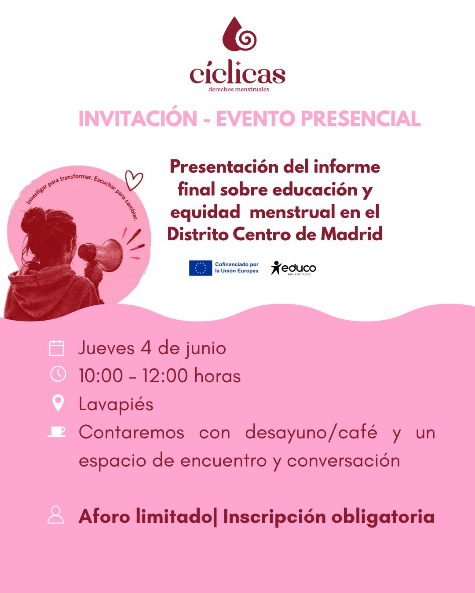
Evento de Cíclicas
Campaña para la presentación de un informe sobre educación menstrual. Un diseño adaptado a seis formatos.
Invitación con QR, posts, banners y cabecera de email.
La web también funciona con teclado y lector de pantalla.
Marielisa González · Madrid
Diseño materiales, edito vídeo y gestiono redes, webs y newsletters para organizaciones de impacto social.
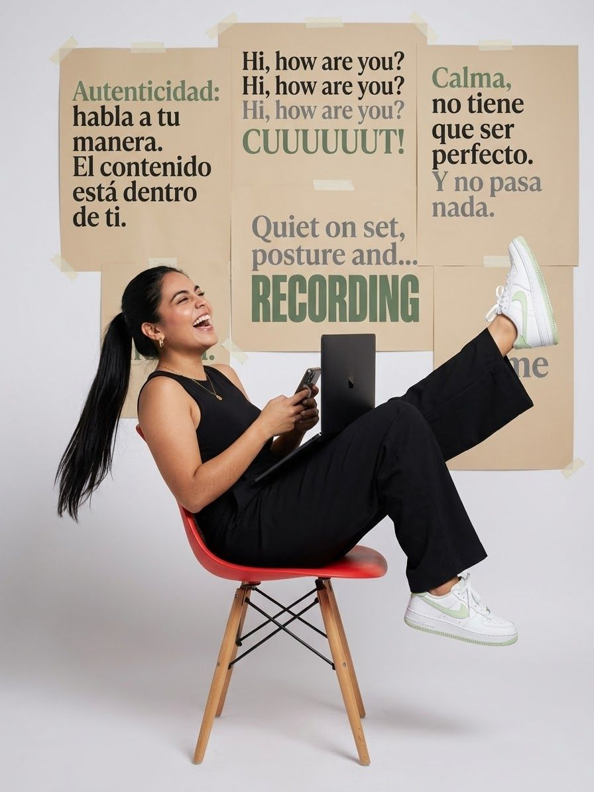
Soy licenciada en Comunicación Social con mención Audiovisual. Empecé en la radio en Caracas: producía programas, escribía guiones, llevaba las redes y conseguía patrocinadores.
Hoy trabajo en marketing y web en Impact Hub Madrid, en el ecosistema de emprendimiento e impacto social. Diseño dossieres, presentaciones e invitaciones, grabo y edito reels, hago fotos en eventos, monto la newsletter y mantengo las webs en WordPress.
Me gusta convertir información compleja en materiales claros, medir qué funciona y usar la IA para quitar trabajo repetitivo al equipo.
Pasa el cursor o pulsa la tarjeta para darle la vuelta.
Una selección de proyectos. En cada uno indico qué parte hice yo.

Campaña para la presentación de un informe sobre educación menstrual. Un diseño adaptado a seis formatos.
Invitación con QR, posts, banners y cabecera de email.
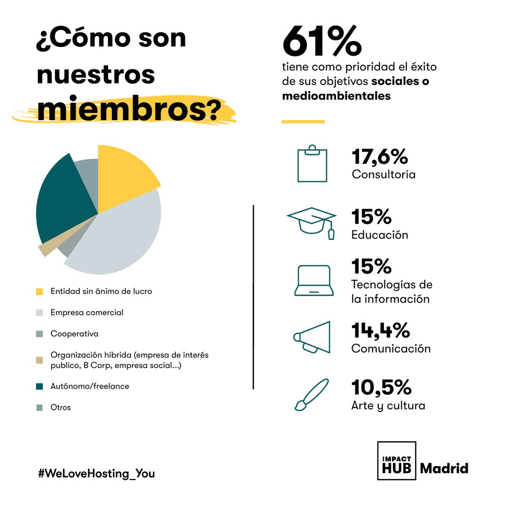
Carrusel de 6 láminas con los resultados de la comunidad de Impact Hub Madrid: perfil, ODS, crecimiento, conexión, inspiración e impulso.
Diseño en Illustrator: datos convertidos en gráficos e iconos.
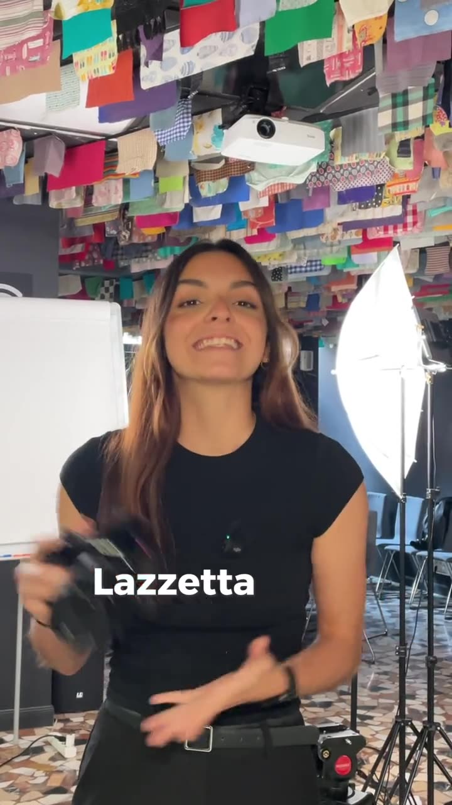
Reel por el Día de la Mujer sobre una fotógrafa y su exposición en Impact Hub Madrid.
Grabación, edición y subtítulos.
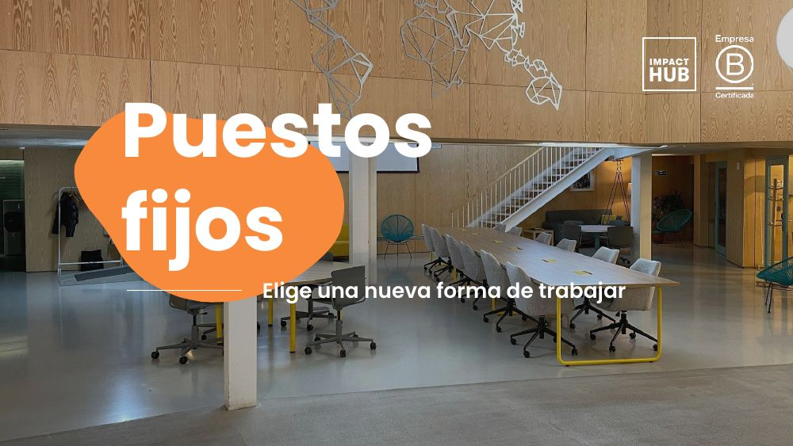
Dossieres de puestos fijos y bonos de coworking, en español y en inglés.
Diseño y maquetación de las dos versiones.
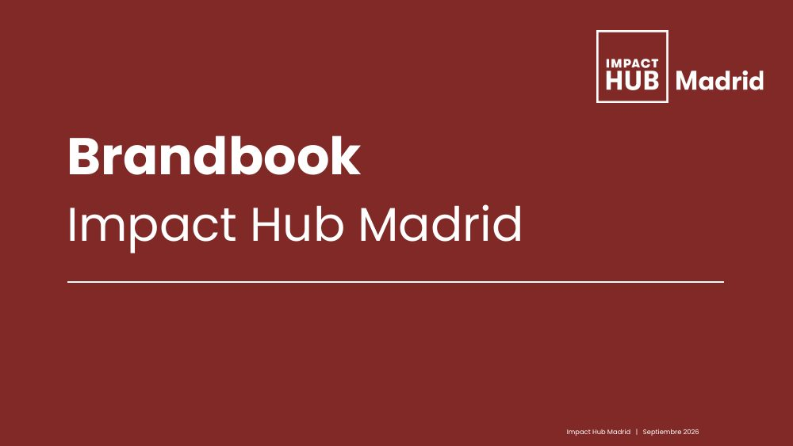
Manual de 29 páginas para que cualquier persona nueva del equipo aplique la marca: tono de voz, logo, colores, tipografía e iconos.
Recopilación de criterios desde Asana, reglas de diseño con enfoque UX, diseño y maquetación.
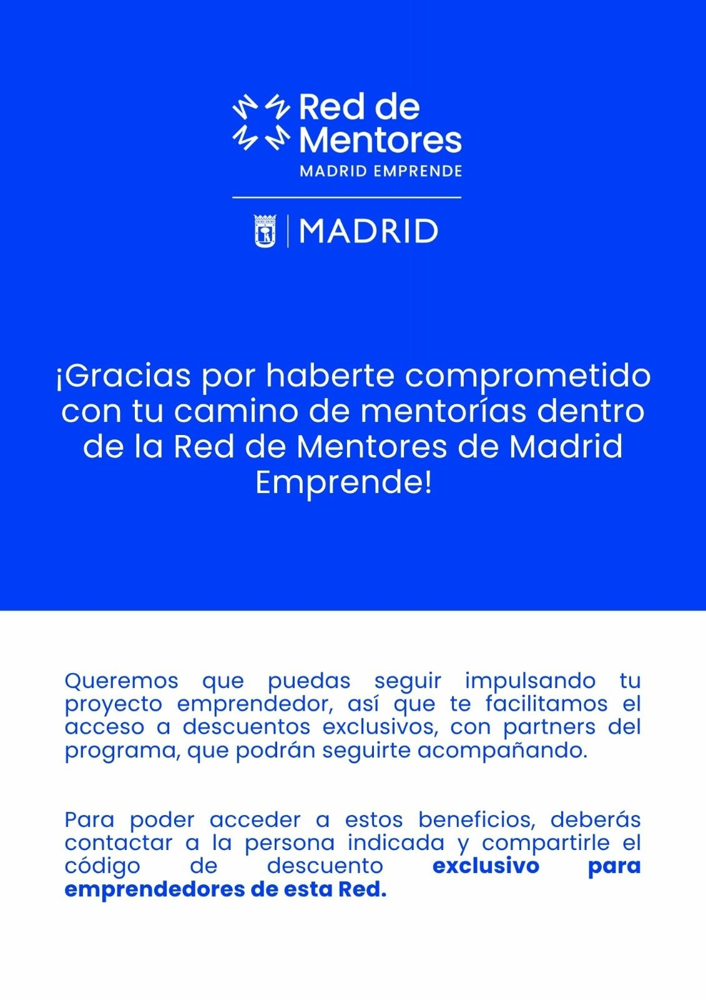
Guía de beneficios para emprendedores del programa municipal Madrid Emprende.
Diseño y maquetación.
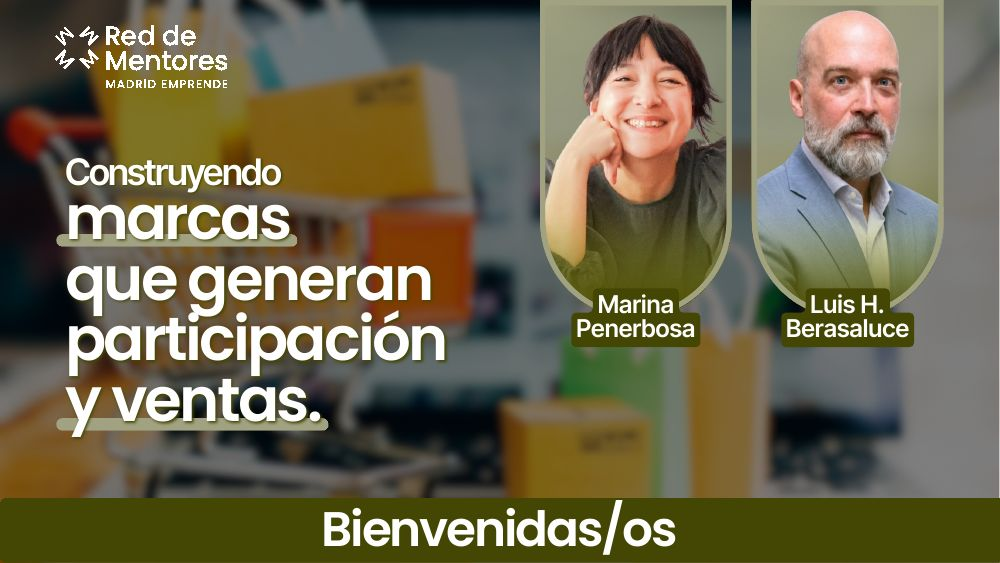
Presentación de 23 diapositivas para un encuentro de la Red de Mentores.
Diseño y maquetación. Contenido de los ponentes.
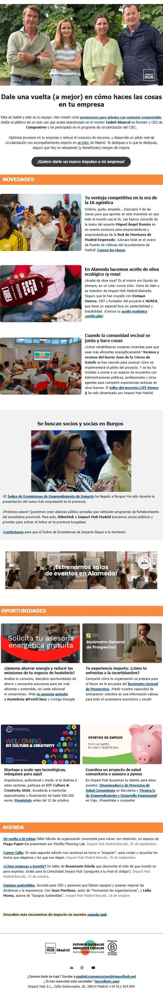
Casi 10.000 destinatarios. Último envío: 28,98 % de apertura.
Plantilla, diseño, imágenes, montaje en Odoo y envío.
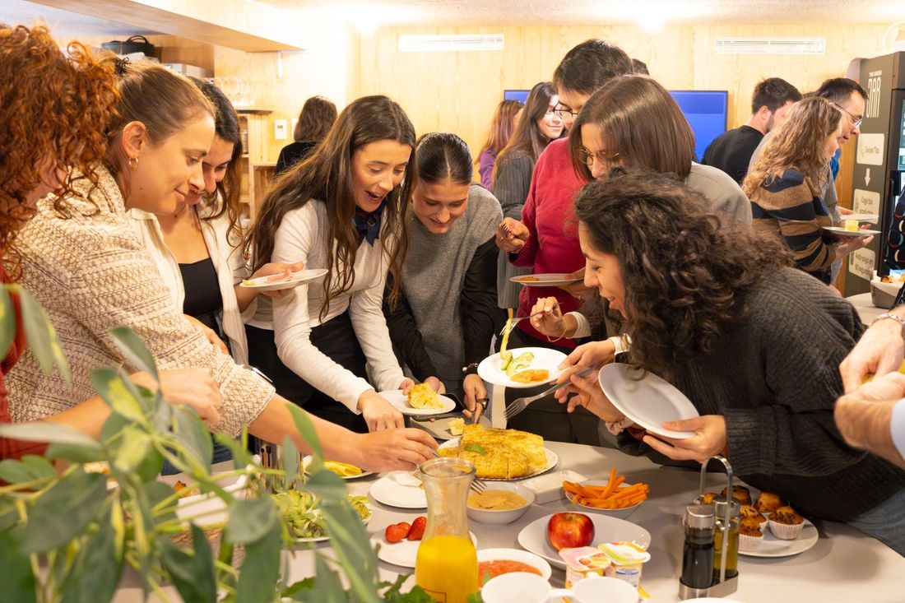
Fotos de comunidad para la web y la newsletter.
Fotografía y selección.
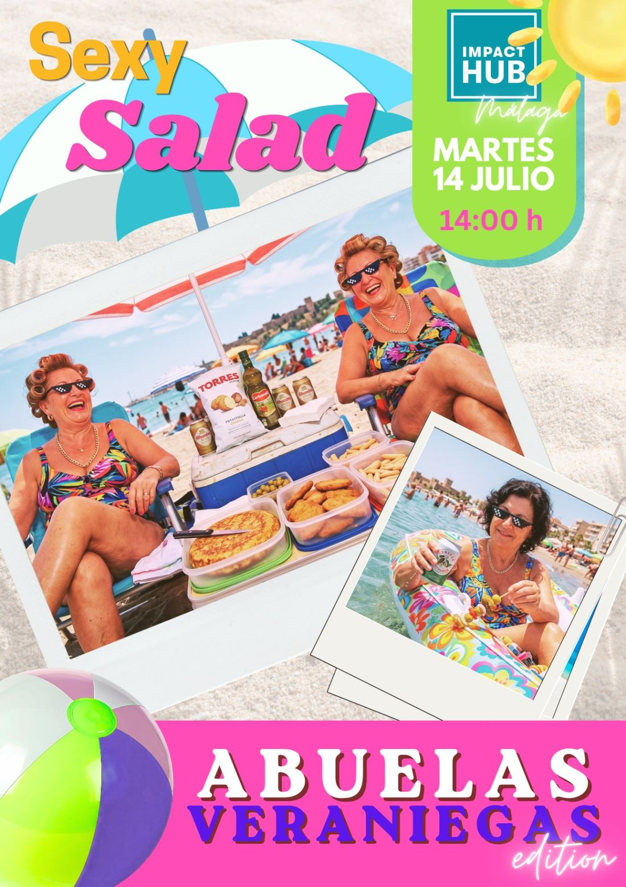
Cartel y hoja de inscripción para una comida de verano de la comunidad.
Diseño. Fotos de banco de imágenes.
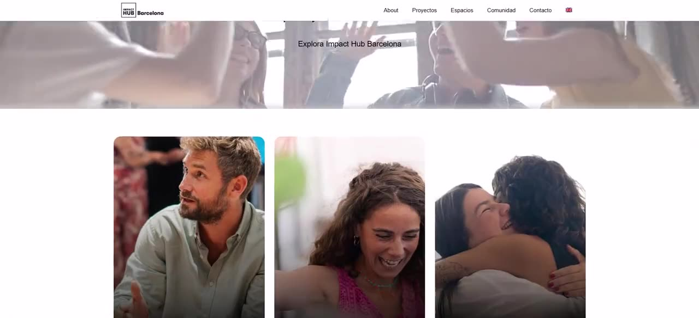
Rediseño completo, más de 20 páginas y versión multidioma. Con antes y después.
Maquetación y desarrollo a partir del diseño.
Captación de seis marcas patrocinadoras para mi programa en la emisora Difusión Latina 97.7 FM, en Caracas.
Propuestas comerciales y relación con los patrocinadores.
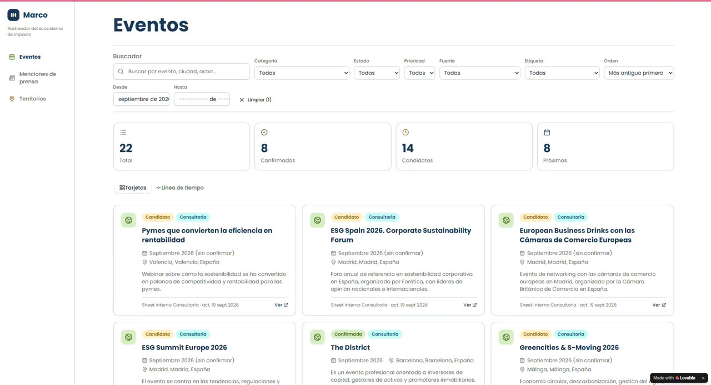
Reúne eventos, menciones en prensa y territorios del ecosistema. Sustituyó media mañana de trabajo manual a la semana.
Idea y desarrollo con Claude Code y Lovable.
Agente que prepara los mailings: exporta las piezas de Canva, las guarda en Drive y monta el correo en Odoo.
Diseño del flujo y desarrollo.
Impact Hub Madrid, de enero a septiembre de 2026, salvo que se indique otra cosa.
Lo que uso a diario, agrupado por familia.
Universidad Santa María, Caracas.
Alcaldía de Sucre.
MR Medios / Estéreo Marketing.
Difusión Latina 97.7 FM. Guion, redes y 6 patrocinadores.
Hack a Boss y Powercoders, 251 horas.
Diseño, vídeo, redes, newsletter, WordPress, CRM e IA.
ISDI, Digitalent y Weplash Academy (IA agéntica).
Contenidos claros y accesibles al servicio de una causa social.
Diseñé la campaña de Cíclicas sobre educación menstrual y trabajo a diario en el ecosistema de impacto social.
He difundido como voluntaria campañas de donación para causas de Venezuela.
Propuse un proyecto de accesibilidad para la web de Impact Hub. Este portfolio lo aplica: